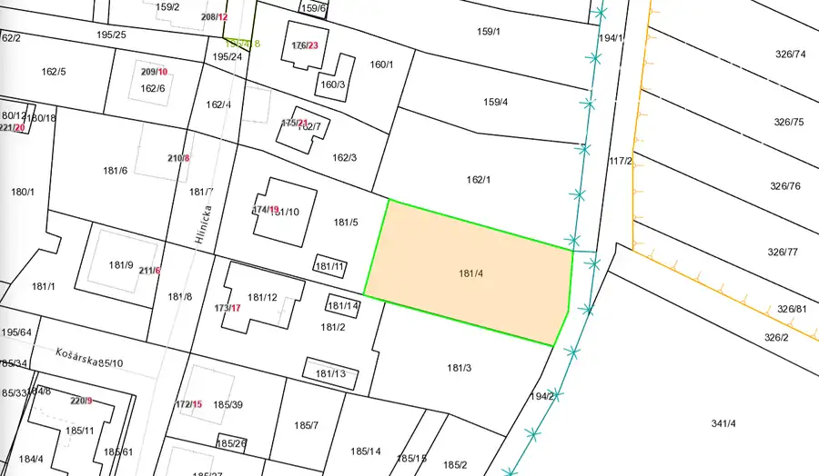

Veľkorysý stavebný pozemok v obci Zavar
Zavar


- Plocha1375 m²
- VlastníctvoOsobné
O nehnuteľnosti
TT reality vám ponúka na predaj stavebný pozemok na ktorom môže vyrásť aj váš domov.Popis nehnuteľnosti :Pozemok nachádzajúci sa v zastavanej ale kľudnej časti obce Zavar má výmeru 1375 m2. Je mierne svahovitý a vďaka svojej rozlohe má potenciál na výstavbu rodinného domu s veľkou záhradou, prípadne ak by bol záujemca developer, je možnosť výstavby dvoch domov. Pozemok sa nachádza za rodinným domov a prístup k nemu je z obecnej asfaltovej komunikácie. V tesnej blízkosti pozemku sa nachádzajú všetky inžinierske sieťe - voda, elektrika 230V/400V, plyn, kanalizácia, internet.Lokalita :Obec Zavar je jedna z najkomplexnejšie vybavených obcí na Slovensku. Nachádza sa 7 min. od Trnavy. Obyvatelia majú k dispozícii komplentú občiansku vybavenosť, ktorá nie je zamozrejmosťou v iných obciach resp. mestách a to napr.: zdravotné stredisko, obchody, základnú školu, materskú školu, moderný športový areál, detské ihrisko. V Zavare sa konajú mnohé kultúrne a športové podujatia. V obci sa náchádza aj policajné oddelenie, čo napomáha k bezpečnosti občanov. Dostupnosť :Trnava - 7 minútBratislava - 30 minúťNitra - 25 minútNapojenie na diaľnicu D1/ R1 zo smeru na Modranku alebo na Vlčkovce. Cena pozemku je 165 000 eurV prípade záujmu o financovanie vám zabezpečíme hypotekárneho špecialitu s licenciou v NBS.Ak vás tento pozemok zaujal, kontaktujte nás a dohodnite si obhliadku, sme vám plne k dispozícii.Kontakt na makléra :Ľuboš Hanzellubos.hanzel@ttreality.com+421 911 088 011
Parametre
- Druh
- Pozemok pre rodinné domy
- Dátum zverejnenia
- 22. 06. 2026
- Elektrina
- Na pozemku
- Odpadové vody
- Pri pozemku - Kanalizácia
- Plocha pozemku
- 1375 m²
- Plyn
- Pri pozemku
- Terén pozemku
- Mierne svahovitý
- Typ
- Predaj
- Vlastníctvo
- Osobné
- Voda
- Na pozemku